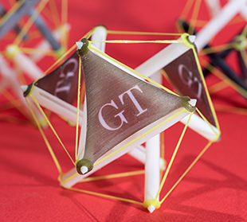

4D Printing of Active Tensegrity
|  | Tensegrity structures with detached struts are naturally suitable for deployable applications, both in terrestrial and outer-space structures, as well as morphing devices. Composed of discontinuous struts and continuous cables, such systems are only structurally stable when self-stress is induced; otherwise, they lose the original geometrical configuration (while keeping the topology) and thus can be tightly packed. Prof. Ke Liu and his collaborators (Dr. J. Wu, Prof. H. J. Qi, amd Prof. G. H. Paulino) exploit this feature by using stimulus responsive polymers to introduce a paradigm for creating actively deployable 3D structures with complex shapes. The shape-change of 3D printed smart materials adds an active dimension to the configurational space of some structural components. Dramatic global volume expansion is achieved by amplifying component-wise deformations to global configurational change via the inherent deployability of tensegrity. Through modular design, one can generate active tensegrities that are relatively stiff yet resilient with various complexities. Such unique properties enable structural systems that can achieve gigantic shape change, making them ideal as a platform for super light-weight structures, shape-changing soft robots, morphing antenna and RF devices, and biomedical devices. The work was published in Scientific Reports on June 14, 2017.
|